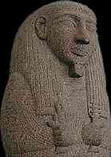

|
Amenemope
Why was the viceroy of Nubia important?
|
The viceroy of Nubia was an especially important person because Nubia was so close to Egypt, and so many valuable materials such as gold, ivory, and ebony came either from Nubia, or through Nubia from countries further south in Africa.
|
What did the Egyptians call the land that we call Nubia?
|
The Egyptians called the land between the area of Aswan and the second
cataract 'Wawat'. They called the land from the second cataract to beyond the fourth cataract, 'Kush'. In the Roman period, the two areas were considered to be one, and were called 'Nubia'. Today, when Egyptologists refer to the lands directly south of Egypt, they use the term 'Nubia'.
|
What were the titles of the viceroy of Nubia?

Setau, a viceroy of Kush
|
The viceroy of Kush was known as the 'King's Son of Kush' (in this case, the word 'son' means that he is important, not that he is the actual son of the pharaoh).
He was also in charge of controlling the valuable gold mines in Nubia, and was known as the 'Overseer of the Gold Lands of the Lord of the Two Lands'.
|
Back...
|